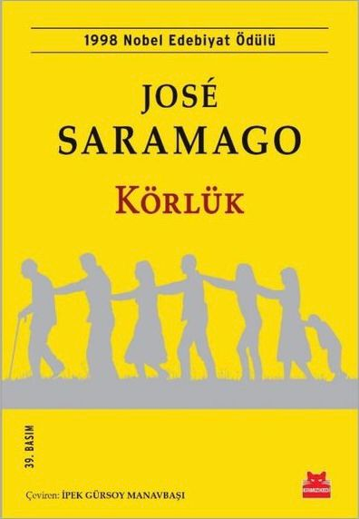

Körlük
Türü: Roman Kapak: Ciltsiz Sayfa Sayısı: 320
ISBN: 9786254182228 Basım Yılı: 2025 Kağıt Tipi: 2. Hamur
Araba kullanmakta olan bir adam, yeşil ışığın yanmasını beklerken ansızın körleşir. Körlüğü, başvurduğu doktora da bulaşır. Körlük, bir salgın hastalık gibi bütün kente yayılır; öldürücü olmasa da tüm etik değerleri yok eder. Toplum, görmeyen gözlerle cinayetlere, tecavüzlere tanık olur. Koca kentte körlükten kurtulan tek kişi, göz doktorunun karısıdır. XX. yüzyıl edebiyatının dev ismi, Nobel ödüllü Portekizli yazar José Saramago, bu romanında, körlük olgusunu bir metafor olarak kullanmış; basit imgelere, sıradan sözcük oyunlarına başvurmadan, yoğun bir anlatımla, anlatıcının ve kahramanların konuşmalarını ortak bir monoloğa dönüştürerek, kurgunun evrenselleşebilmesi açısından kişilere ad vermeksizin, liberal demokrasinin insanları sürüklediği sağlıksız ortamı olağanüstü bir ustalıkla yaratmış ve yaşatmıştır.